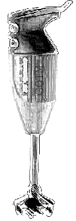

Next:
Contents
Contents
Lars Umlauf
Hans Burchard
Karsten Bolding
GOTM
Sourcecode
and
Test Case Documentation
Version 4.0

Flow -- Mixing -- Sediment Transport
Contents
Introduction
What is GOTM?
The idea behind GOTM
How to read the documentation
Acknowledgements
The GOTM main program
Introduction
GOTM -- the main program (Source File: main.F90)
Fortran: Module Interface gotm -- the general framework (Source File: gotm.F90)
Initialise
Manage
The
Print
The mean flow model
Introduction
Physics
Numerics
Fortran: Module Interface Mean Flow (Source File: meanflow.F90)
Initialisation
Cleaning
Print
The vertical grid (Source File: updategrid.F90)
The Coriolis rotation (Source File: coriolis.F90)
The U-momentum equation (Source File: uequation.F90)
The V-momentum equation (Source File: vequation.F90)
The external pressure-gradient (Source File: extpressure.F90)
The internal pressure-gradient (Source File: intpressure.F90)
The vertical friction (Source File: friction.F90)
The temperature equation (Source File: temperature.F90)
The salinity equation (Source File: salinity.F90)
The buoyancy equation (Source File: buoyancy.F90)
Calculation of the vertical shear (Source File: shear.F90)
Calculation of the stratification (Source File: stratification.F90)
Convective adjustment (Source File: convectiveadjustment.F90)
The turbulence model
Introduction
Second-order models
Algebraic Models
Explicit models for vertical shear and stratification
Equilibrium states
Stability of explicit models
Parameter conversion for other models
The model of
Gibson and Launder
(1978)
The model of
Canuto et al.
(2001)
The model of
Mellor and Yamada
(1982)
Numerics
Fortran: Module Interface turbulence: its all in here ... (Source File: turbulence.F90)
Initialise
Initialize
Generate
Analyse
Report
Manage
Update
Update
Update
Update
Update
Update
Compute
Boundary
Boundary
Boundary
Boundary
Boundary
Clean
Print
Update turbulence production (Source File: production.F90)
Update dimensionless alpha's (Source File: alpha_mnb.F90)
Update time scale ratio (Source File: r_ratio.F90)
The dynamic k-equation (Source File: tkeeq.F90)
The dynamic q2/2-equation (Source File: q2over2eq.F90)
The dynamic kb-equation (Source File: kbeq.F90)
The dynamic q2l-equation (Source File: lengthscaleeq.F90)
The dynamic epsilon-equation (Source File: dissipationeq.F90)
The dynamic psi-equation (Source File: genericeq.F90)
The algebraic k-equation (Source File: tkealgebraic.F90)
The algebraic kb-equation (Source File: kbalgebraic.F90)
Some algebraic length-scale relations (Source File: algebraiclength.F90)
The algebraic epsilonb-equation (Source File: epsbalgebraic.F90)
The algebraic velocity variances (Source File: variances.F90)
Algebraic length-scale from ISPRAMIX (Source File: ispralength.F90)
Algebraic length-scale with two master scales (Source File: potentialml.F90)
The non-local, exact weak-equilibrium stability function (Source File: cmue_a.F90)
The non-local, approximate weak-equilibrium stability function (Source File: cmue_b.F90)
The local, weak-equilibrium stability functions (Source File: cmue_c.F90)
The quasi-equilibrium stability functions (Source File: cmue_d.F90)
The Munk and Anderson (1948) stability function (Source File: cmue_ma.F90)
The Schumann and Gerz (1995) stability function (Source File: cmue_sg.F90)
Flux Richardson number stability function (Source File: cmue_rf.F90)
Calculate c3 from steady-state Richardson number (Source File: compute_cpsi3.F90)
Calculate steady-state Richardson number from c3 (Source File: compute_rist.F90)
Update internal wave mixing (Source File: internal_wave.F90)
TKE flux from wave-breaking (Source File: fk_craig.F90)
Fortran: Module Interface kpp: the KPP-turbulence model (Source File: kpp.F90)
Initialise
Loop
Compute
Compute
Compute
Compute
Printing GOTM library version (Source File: gotm_lib_version.F90)
Air-Sea interaction
Introduction
Fortran: Module Interface airsea -- atmospheric fluxes (Source File: airsea.F90)
Initialise
Obtain
Finish
Read
Read
Read
Read
Read
Read
Read
Integrate
Set
Set
Print
Fortran: Module Interface airsea_variables (Source File: airsea_variables.F90)
Calculate the humidity (Source File: humidity.F90)
Calculate the long-wave back radiation (Source File: back_radiation.F90)
Wrapper for air-sea fluxes calculations (Source File: airsea_fluxes.F90)
Heat and momemtum fluxes according to Kondo (Source File: kondo.F90)
Heat and momentum fluxes according to Fairall et al. (Source File: fairall.F90)
Calculate the short-wave radiation (Source File: short_wave_radiation.F90)
Working with observed data in GOTM
Fortran: Module Interface observations -- the 'real' world (Source File: observations.F90)
Initialise
get_all_obs
read_obs
read_profiles
Clean
Print
get_s_profile
get_t_profile
get_o2_profile
get_ext_pressure
get_int_pressure
read_extinction
get_w_adv
get_zeta
get_wave
get_vel_profile
get_eps_profile
analytical_profile
const_NNT
const_NNS
Saving the results
Fortran: Module Interface output -- saving the results (Source File: output.F90)
Initialize
Set
Save
Close
Compute
Fortran: Module Interface asciiout -- saving the results in ASCII (Source File: asciiout.F90)
Open
Save
Close
Fortran: Module Interface ncdfout -- saving the results in NetCDF (Source File: ncdfout.F90)
Create
Save
Close
Begin
Define
Set
Store
Utilities
Introduction
Fortran: Module Interface util -- parameters and interfaces for utilities (Source File: util.F90)
Diffusion schemes -- grid centers (Source File: diff_center.F90)
Diffusion schemes -- grid faces (Source File: diff_face.F90)
Advection schemes -- grid centers (Source File: adv_center.F90)
Lagrangian particle random walk (Source File: lagrange.F90)
Fortran: Module Interface mtridiagonal -- solving the system (Source File: tridiagonal.F90)
Allocate
Simplified
De-allocate
Fortran: Module Interface eqstate -- the equation of state (Source File: eqstate.F90)
Read
Select
Compute
Compute
The
The
Interpolate from observation space to model grid (Source File: gridinterpol.F90)
Convert between buoyancy fluxes and others (Source File: convert_fluxes.F90)
Fortran: Module Interface time -- keep control of time (Source File: time.F90)
Initialise
Convert
Convert
Keep
Convert
Convert
Return
Return
Print
Lagrangian particle random walk (Source File: lagrange.F90)
General ODE solver (Source File: ode_solvers.F90)
First-order
Second-order
Fourth-order
First-order
Second-order
Fourth-order
First-order
Second-order
Fourth-order
First-order
Second-order
Calculation
Matrix
Biogeochemical models
Mathematical formulation
Numerical aspects
Computational aspects
Extra features
Fortran: Module Interface seagrass -- sea grass dynamics (Source File: seagrass.F90)
Initialise
Update
Storing
Finish
Running GOTM in a GUI
Introduction
Software required
GOTM scenarios
Idealised scenarios
Couette-flow
Pressure-gradient driven channel flow
Turbulence under breaking surface waves
Some entrainment scenarios
Estuarine dynamics
Seagrass canopy dynamics
Shelf sea scenarios
Fladenground Experiment
Annual North Sea simulation
Seasonal North Sea simulation
Liverpool Bay
Gotland Deep
Middelbank
Open ocean scenarios
Ocean Weather Ship Papa
Lake scenarios
Lago Maggiore
Biogeochemical scenarios
Channel flow - Rouse profile
Northern North Sea - NPZD model
Fladenground Experiment -
Fasham et al.
(1990)
model
Gotland Deep -
Neumann et al.
(2002)
model
Bibliography
About this document ...
Karsten Bolding 2012-01-24